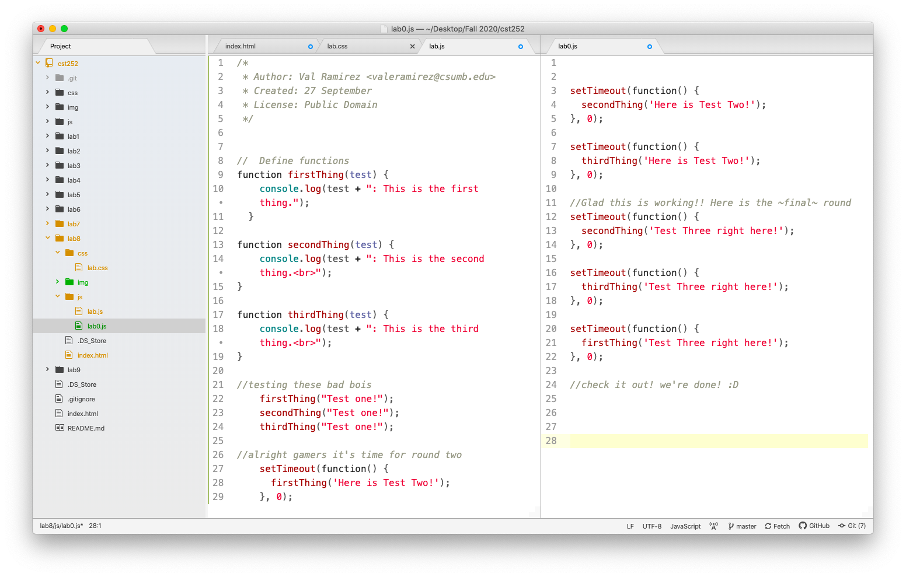
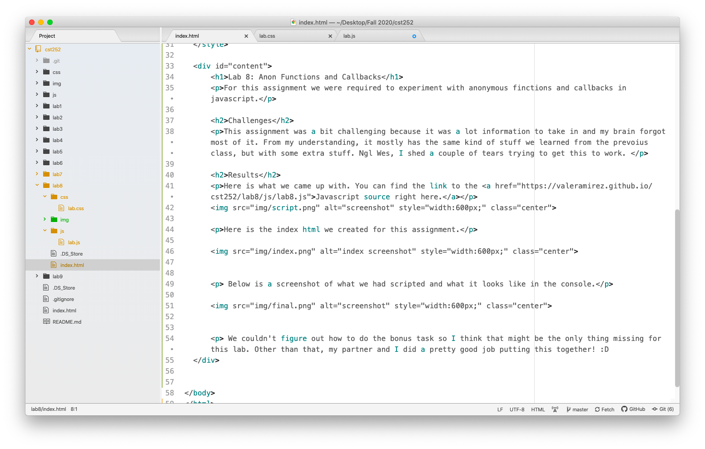
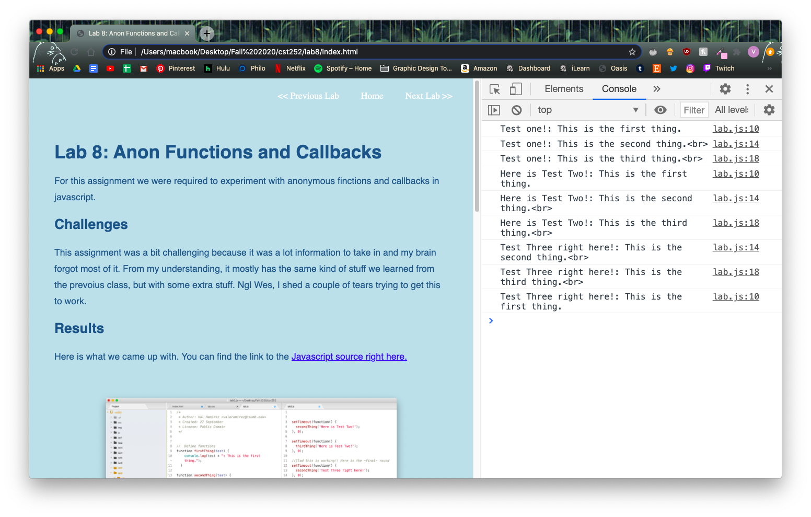

Lab 8: Anon Functions and Callbacks
For this assignment we were required to experiment with anonymous finctions and callbacks in javascript.
Challenges
This assignment was a bit challenging because it was a lot information to take in and my brain forgot most of it. From my understanding, it mostly has the same kind of stuff we learned from the prevoius class, but with some extra stuff. Ngl Wes, I shed a couple of tears trying to get this to work.
Results
Here is what we came up with. You can find the link to the Javascript source right here.
Here is the index html we created for this assignment.
Below is a screenshot of what we had scripted and what it looks like in the console. If you want to see it for yourslef, this is what should show up!
We couldn't figure out how to do any of the bonus tasks so I think that might be the only thing missing for this lab. Other than that, my partner and I did a pretty good job putting this together! :D